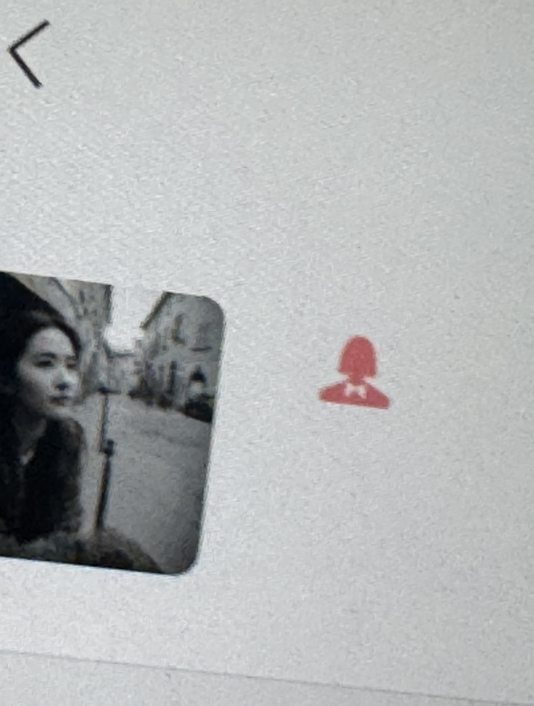

我们的相遇
相遇本来是美好的，谢谢。
我现在对你的印象是一个美女，一个长得像刘亦菲的美女？
一个细心，温柔，体贴？因为你有养猫？
可能带点伤感，因为我不知道你跟美国那个怎么了
没有任何负面的情绪，没有要恶心你的意思，只是单纯的想念
🤝
我性格不太好，太固执了，对不起
有时候太过自我，忽略了别人的感受
当时有可能恶心到你了，对不起
第一次一起打游戏时，我因为情绪失控对你发了脾气
你挂了电话，游戏也挂机了
那一刻我才发现自己做错了，但你已经拉黑了我
我真的很后悔，后来一直想/在跟你道歉
后来好不容易又联系上你
没想到第二次又因为一点小事和你吵了起来
有可能是没人给我转过奶茶钱，然后我给我兄弟转的也是那么多
当时我说了很难听的话，现在想起来真的很不应该，而且没有那个必要
真的很对不起
说真的，你把我拉出来的时候真的很开心，非常的开心
直到你说「我忘记了」「我不想闲聊」「你找别人吧」，有点伤心
你变了很多啊，我很害怕，害怕你又把我拉黑
如果打扰到你，对不起，但我真的没有恶意
我只想和你好好聊聊，希望你可以考虑一下下
你说你不想闲聊，不知道是你经历了什么伤心事，还是说是我的问题
如果你经历了不开心的，说来听听呗，我也经历过，我愿意听
如果是我的问题，我在这里给你郑重道个歉，对不起，以后不打扰你了
说实话，微信那个记录，虽然说是平板延迟，虽然你话难听，
我一直没舍得去删，所以才有前天那个图片，
我真的很后悔，想继续当朋友，或者卑微一点去说「我想留在你的身边」，有空聊聊天，打打电话，打打游戏
实在不行，让我加你好友，下赛季有空一起玩，可以吗
但如果你愿意给我们的友情一次机会
我会用心去维护这段友谊
你愿意原谅我，继续做朋友吗？
谢谢你愿意听 愿意原谅我
我会珍惜这次机会
等你想聊的时候聊聊天呗
谢谢你🤗
没太多可说的
对不起
无论多久
我都希望有一天我们能和好如初